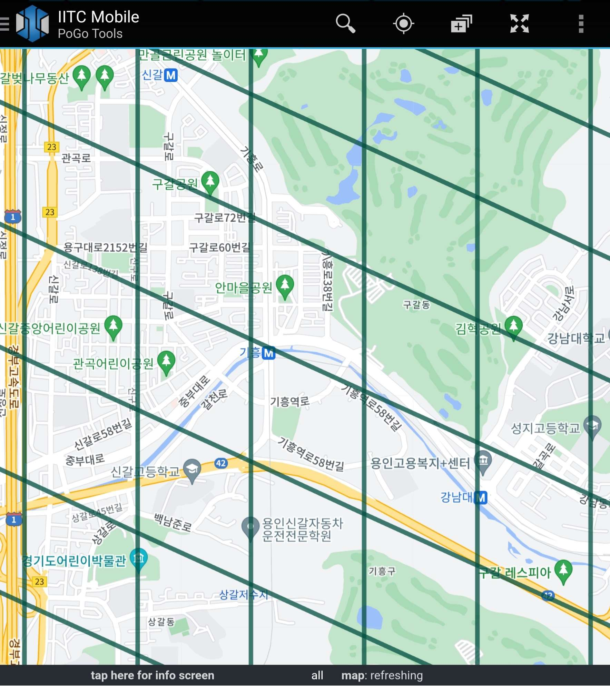
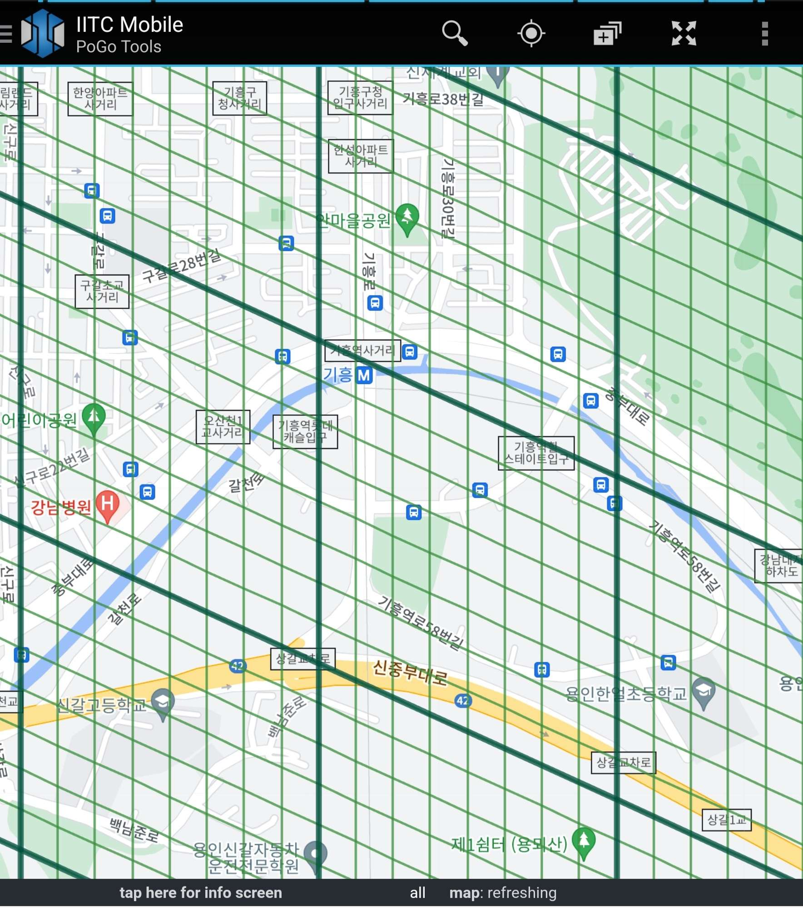

셀은 마름모 모양으로 구글 지도를 나눈 영역 하나를 의미합니다

사진에서 보이듯 큰 마름모들로 나누어진 것이 보이실 겁니다.
이 큰 마름모 하나를 "셀"이라고 합니다.
17셀은 위에서 설명드렸던 셀 안에 있는 작은 마름모들을 의미합니다.

*위 사진은 셀 화면을 더 확대한 사진입니다*
17셀(작은 셀) 하나 당 스탑과 체육관은 하나만 존재 할 수 있습니다.
만약 셀 하나에 여러 스탑 후보가 존재하면 그 중 하나만
포켓몬고 상에서 확인 할 수 있습니다.
"스탑이 엄청 겹친 곳은 버그인가요?" 라고 질문하실 수 있는데,
그러한 경우는 스폰서 스탑이라던지,
사람이 승인이 된 스탑의 위치를 옮기는 과정에서 셀에 겹치게 된 것입니다.
위와 같은 경우는 셀이 겹치는 것이 유효합니다.
다만, 이 사이트를 제작하는 시점인 2023년 1월 11일 기준으로는
스탑의 위치를 옮기는 것은 불안정합니다. (이유는 6장에서 소개)
이 부분은 앞에서 말씀드린 셀의 개념을 이해하셔야 쉬울 겁니다.
셀(큰 셀)에 포켓스탑 수에 따라 체육관의 수가 결정됩니다.
(17셀 내에서 스탑이 겹쳐서 나타나지 않는 후보는 카운팅에서 제외됩니다.)
스탑 2개: 체육관 1개
스탑 6개: 체육관 2개
스탑 20개: 체육관 3개
정상적인 방법으로는 큰 셀 하나에 체육관 3개가 최대입니다.
셀 확인이 가장 중요합니다.
무턱대고 신청했다가 영역이 겹치면 스탑도 안보이고요.
셀을 확인하는 방법은 주로 "iitc"라는 어플, 사이트를 이용합니다.(위 사진속 어플)
iitc를 이용해서 셀을 확인하도록 셋팅하는 영상 링크를 공유해드립니다.
이 방법을 글 만으로 설명하면 이해하기 힘든 부분이 있으실 수 있기 때문입니다.
iitc 셋팅 방법, 쌈밥 유튜브